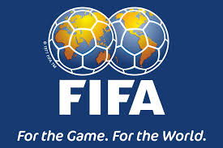

Copa Intercontinental 2025 começa antes do fim do Brasileirão
Copa Intercontinental 2025 terá início 11 dias antes do fim do Brasileirão
A Copa Intercontinental de 2025, nova competição que substitui o antigo Mundial de Clubes, foi oficialmente marcada para o período de 10 a 17 de dezembro de 2025, conforme anunciado pelo Conselho da FIFA No entanto, as datas desta competição podem gerar um grande desafio para os clubes brasileiros.
Calendário em confronto
- O Brasileirão 2025 está programado para terminar em 21 de dezembro, com as rodadas finais ocorrendo nos dias 10, 14 e 17 de dezembro.
- Já a Copa Intercontinental começa em 10 de dezembro com o “Dérbi das Américas” (enfrentamento entre campeões da Libertadores e da Liga dos Campeões da CONCACAF), seguida pela semifinal no dia 13 e a grande final marcada para 17 de dezembro.
Ou seja, o torneio começa 11 dias antes da última rodada da Série A, resultando num conflito direto com três rodadas decisivas do Brasileirão.
Impacto para os clubes brasileiros
Para as equipes que conquistarem a Libertadores e se classificarem para a Intercontinental, a agenda promete uma verdadeira maratona:
Haverá sobreposição de jogos entre as rodadas 35 a 37 da Série A e os confrontos decisivos da competição internacional.
A CBF já tinha conhecimento dessa sobreposição desde a montagem do calendário nacional e realizou reuniões com os clubes em 7 de novembro de 2024. Mesmo assim, as datas da Intercontinental só foram oficialmente divulgadas em março de 2025, dificultando ajustes prévios .
No ano anterior, o Botafogo enfrentou cenário semelhante: disputou a última rodada em 8 de dezembro de 2024, viajou ao Catar e jogou contra o Pachuca apenas três dias depois, sofrendo derrota por 3 a 0.
Insatisfações e possíveis soluções
A CBF já sinalizou preocupação com o embate de datas e busca soluções para mitigar o impacto na competição nacional . A expectativa gira em torno de ajustes pontuais nas datas do Brasileirão, especialmente nas rodadas finais, para evitar punições àqueles clubes que disputarão a Intercontinental.
Conclusão
A fase decisiva de competições internacionais reforça dilemas de calendário no futebol brasileiro. A intersecção entre a Copa Intercontinental e o Brasileirão revela tensões logísticas e esportivas – deixando em aberto se haverá mudanças no cronograma para abrigar os clubes sul-americanos.